Pedidos en línea · cuenta demo (Taquería Don Chuy)
Capturas reales del sistema con la cuenta demo. Página pública: donpunto.com/donchuy (aún NO publicada en producción).
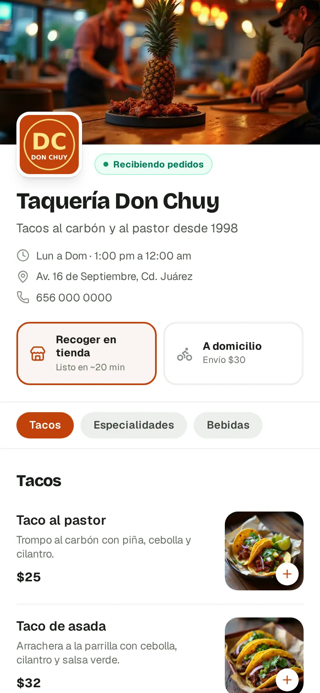
Página del restaurante (celular)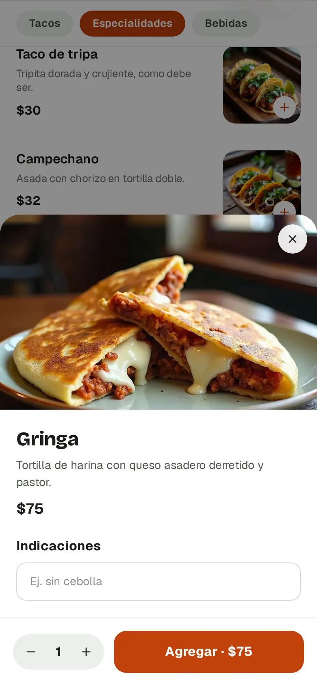
Al tocar un platillo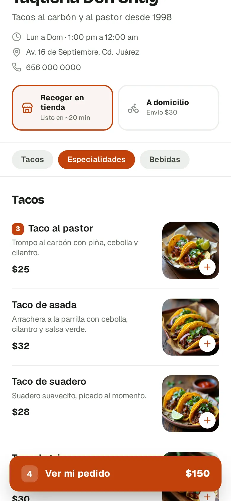
Carrito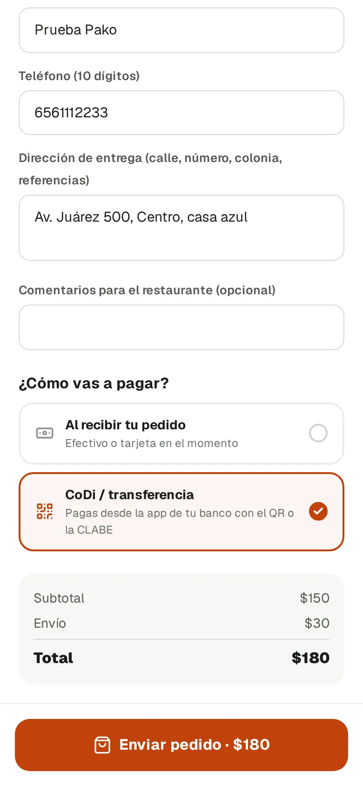
Datos y forma de pago Total con envío
Total con envío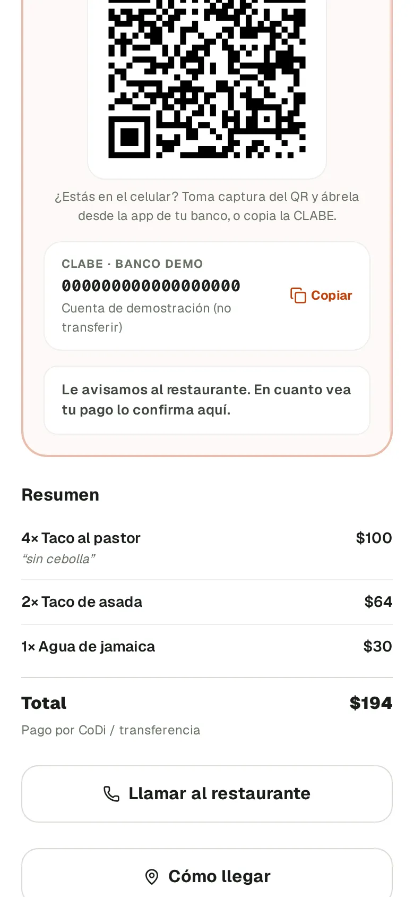
Seguimiento + pago CoDi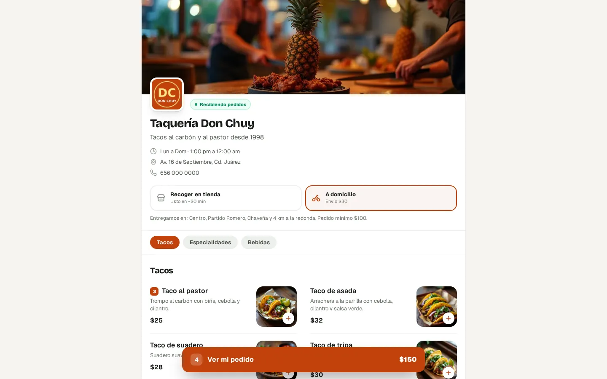
Página en computadora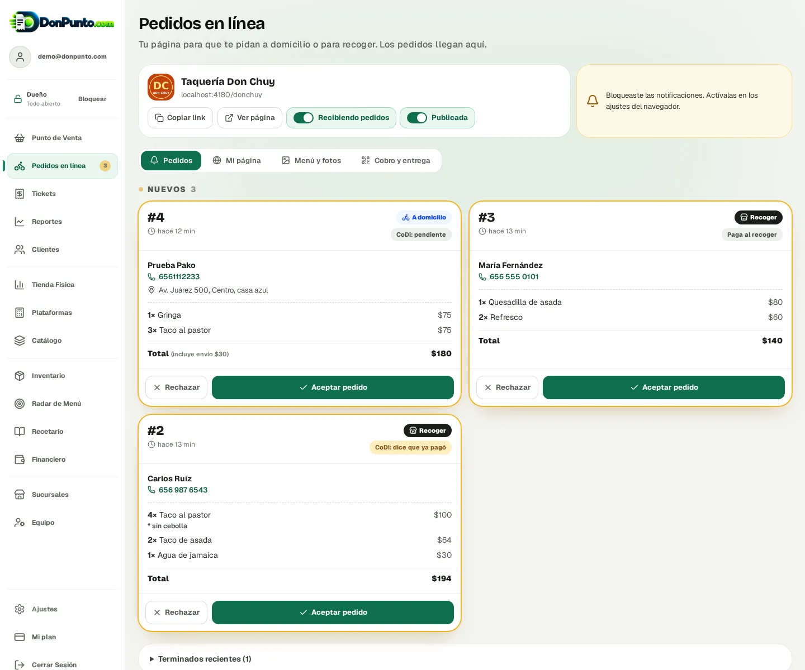
Panel: pedidos que lleganPanel: pedido aceptado (en curso)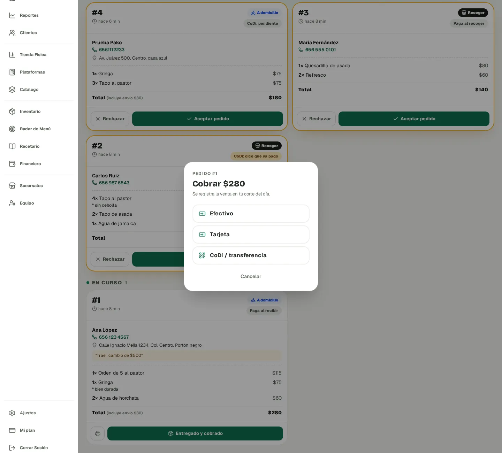
Panel: entregado y cobrado → entra al corte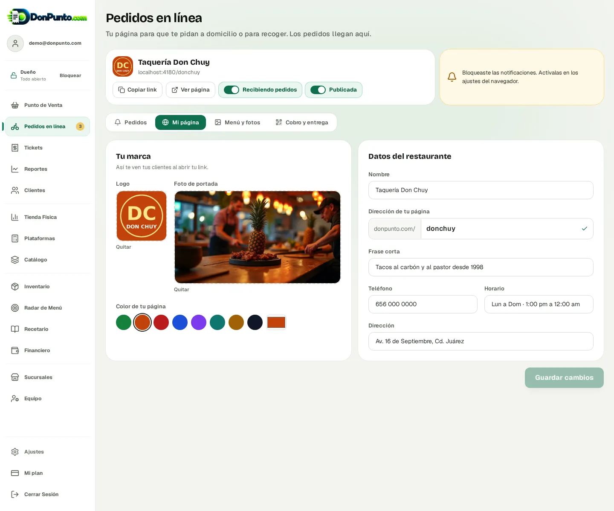
Panel: Mi página (logo, portada, color)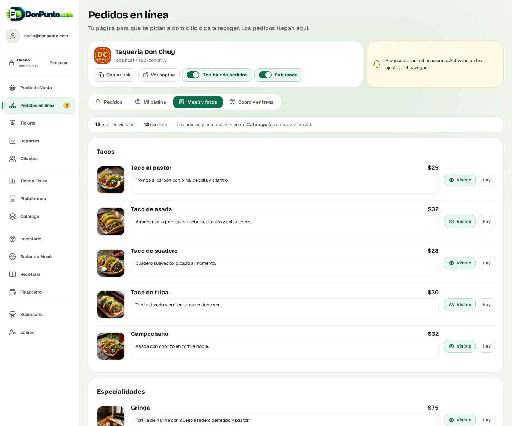
Panel: Menú y fotos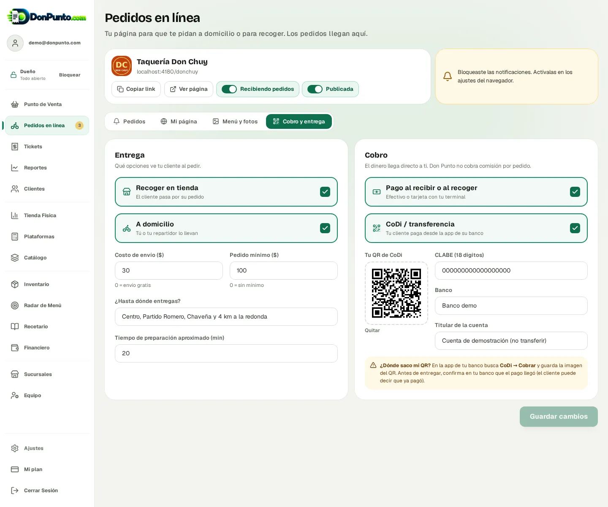
Panel: Cobro y entrega (CoDi)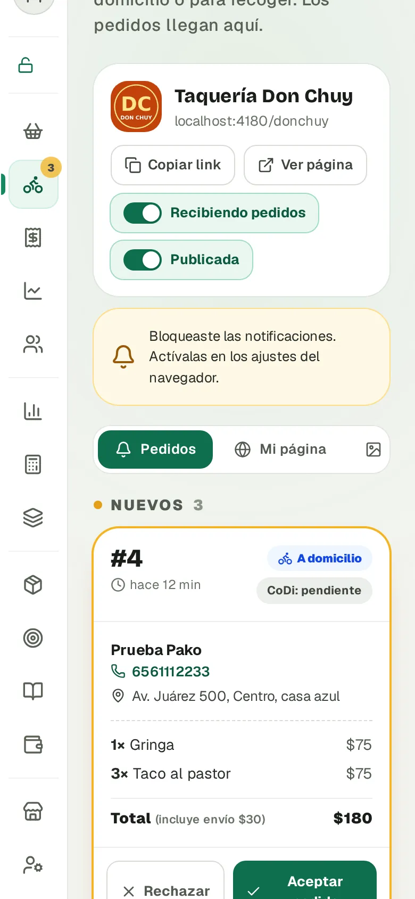
Panel en celular